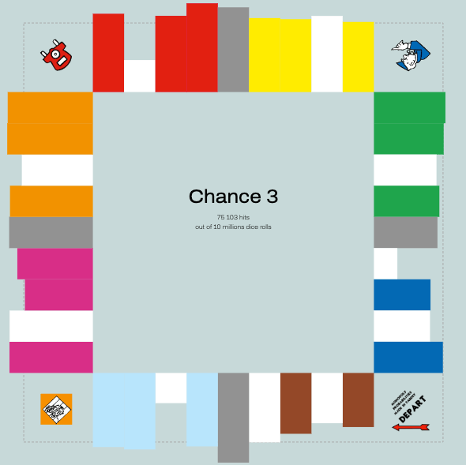
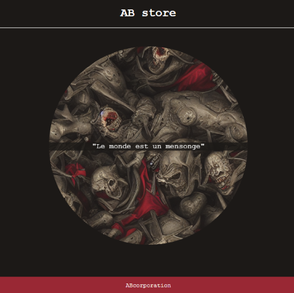
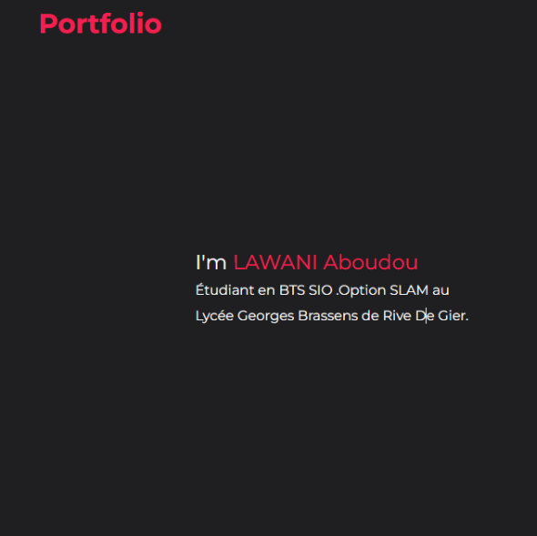

Monopoly :
Une version simplifiée du jeu de société Monopoly crée en utilisant le langage de programmation Python dans le cadre d’un projet scolaire. Le jeu a implémenté des fonctionnalités telles que le lancement de dés, le déplacement de pions, l’achat et la vente de propriétés, la collecte de loyers et la gestion d’un budget. Ce projet a mis en pratique les compétences en programmation, en résolution de problèmes et en conception tout en offrant une expérience éducative.
AB store :
Création dans le cadre d’un projet scolaire un site web marchand de vente de chaussure en utilisant des technologies telles que le HTML, CSS, JavaScript et PHP. Le site marchand présente une variété de chaussures, organisées par catégories et marques. Ce projet a mis en pratique des compétences en développement web, en design et en marketing, tout en offrant une expérience immersive dans le monde du commerce électronique.
Portfolio :
Création d’un portfolio en ligne pour présenter mes compétences, réalisations professionnelles et personnelles, mes expériences et mes projets. J’ai utilisé des technologies telles que le HTML, CSS et JavaScript pour créer un site web interactif et visuellement attractif. Le projet a démontré ma maîtrise du développement web, de la conception de site web, de la création de contenu, de la planification de projets et de la communication.
Puzzle :
Développement d'un site e-commerce spécialisé dans la vente de puzzles, offrant une interface ou l'on peut créer un compte ou se connecter. Un système y ai intégrer pour la gestion de panier, où les utilisateurs peuvent ajouter, modifier, ou supprimer des articles. Un processus de commande est aussi integrer pour offrir différents modes de paiement prédéfinis et pour finir une section d'administration permettant la gestion des commandes et des comptes utilisateurs est aussi integrer. Ce projet démontre ma capacité à concevoir une plateforme e-commerce fonctionnelle, offrant une expérience utilisateur et un backend administratif.